Facteurs de risque
- Vieillissement et comorbidités
- Diabète
- Alcoolisme
- Immunodépression
- Malnutrition
- Drépanocytose
- Toxicomanie
- Chirurgie et traumatismes du rachis
- Cancer
- Cirrhose
- Insuffisance rénale
Fiche rapide · Ostéo-articulaire
Physiopathologie, protocole IRM, sémiologie, orientation étiologique (pyogènes, tuberculose, brucellose), formes rares et diagnostic différentiel.
Astuce : cliquez sur une couleur pour n'afficher qu'elle.
Diagnostic sur un faisceau d'arguments : clinique, biologique, imagerie. IRM : gold standard. Diagnostic étiologique et de confirmation : bactériologie +++.
Principal mode de contamination.
Germes impliqués
L'infection débute dans le spongieux sous-chondral, près du ligament vertébral antérieur. Les plateaux inférieur et supérieur sont vascularisés par la même artère segmentaire (partie antérieure +++), d'où l'atteinte en miroir des deux plateaux.
3 voies de diffusion : trans-discale, sous-ligamentaire, vasculaire.
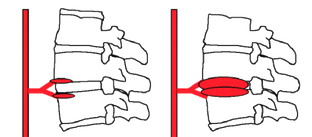
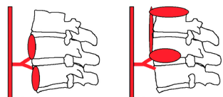
Examen de première intention.
Limite : signes tardifs (latence de 2 à 6 semaines), sensibilité faible.
Étude osseuse : importance de la destruction.
Guidage du prélèvement ; alternative en cas de contre-indication ou de non-disponibilité de l'IRM.
Gold standard : sensibilité et spécificité élevées.
Utile dans les formes précoces : hypermétabolisme ; recherche d'autres localisations. Peu spécifique.
Exploration de la totalité du rachis +++ : coupes sagittales du rachis entier à la recherche de lésions multifocales.
Les mêmes structures analysées avec les trois techniques.
Un signe radiologique ne mène pas au germe ! Deux géodes qui s'affrontent ou un abcès bilobé de l'espace épidural : pas toujours une tuberculose.
Le diagnostic de certitude reste bactériologique (± histologique), sérologique pour la brucellose.
LVP : ligament vertébral postérieur.
Radiographie
Scintigraphie
TDM (si IRM contre-indiquée ou non disponible)
IRM
Signes de présomption
Formes anatomo-radiologiques
Diagnostic de certitude
Radiographie
Scintigraphie, IRM et TDM
Signes de présomption
Diagnostic de certitude
Pronostic
Spondylite : penser à
Radiographie / TDM
IRM
Spondylite tuberculeuse : diagnostic par biopsie disco-vertébrale.
Arthrite facettaire : voir le cas « Bacillus cereus » en annexe →
Le vide discal n'élimine pas le diagnostic d'infection : germes spécifiques (brucellose) >> germes banals. Physiopathologie mal connue.
Le diagnostic de certitude est bactériologique (± histologique). Le prélèvement est généralement guidé par scopie ou TDM.
Plusieurs options selon le cas : scopie ou TDM.
Piège
Conduite
Deux cas annotés : tuberculose rachidienne et spondylodiscite à Bacillus cereus.
IRM et TDM annotées · légendes · évolution à 1 mois
Intégrité du disque intervertébral malgré des lésions étendues.
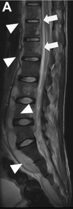
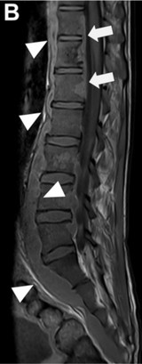
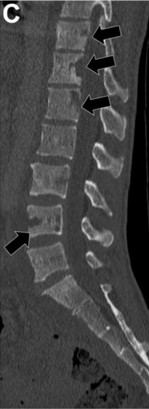
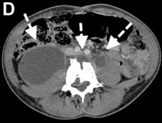
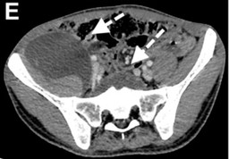
Atteinte disco-vertébrale L3-L4 associée à une arthrite facettaire T11-T12 : aggravation radiologique au contrôle à 1 mois.
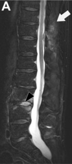
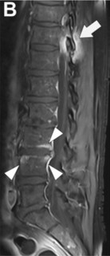
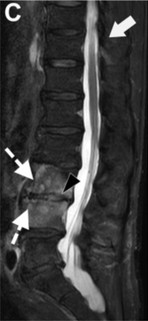
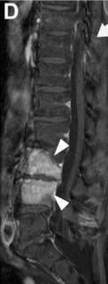
Survolez une ligne de la légende pour la repérer sur les images.
Lisez le tableau, choisissez le germe le plus probable.
1Début brutal, fièvre, syndrome inflammatoire franc ; pincement discal précoce ; atteinte de 2 corps vertébraux lombaires.
Pyogène : début brutal, syndrome inflammatoire franc, pincement précoce, ≤ 2 vertèbres, siège lombaire.
2Atteinte thoracique de 4 vertèbres par extension sous-ligamentaire, abcès paravertébral volumineux à paroi fine, disque longtemps respecté.
Tuberculose : siège thoracique, ≥ 3 vertèbres, abcès volumineux à paroi fine, atteinte discale tardive.
3Éleveur, douleur lombaire basse mécanique ; bec de perroquet et vide discal à la radiographie.
Brucellose : contexte d'exposition, siège lombaire bas, bec de perroquet, vide discal possible. Diagnostic sérologique +++.
4Abcès intra-osseux, rehaussement vertébral focal et hétérogène, atteinte de l'arc postérieur.
Tuberculose : abcès intra-osseux, rehaussement focal hétérogène, éléments postérieurs atteints.
5Rehaussement vertébral diffus et homogène, abcès à paroi épaisse et irrégulière, épidurite ne respectant pas le LVP.
Pyogène : rehaussement diffus homogène, paroi épaisse et irrégulière, LVP non respecté.
Rappel : un signe radiologique ne mène pas au germe, le prélèvement confirme.
Cliquez sur une carte pour voir la réponse.